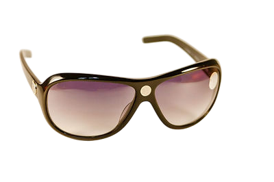
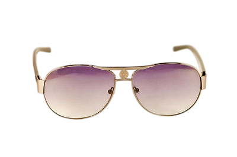
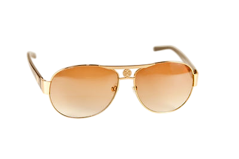
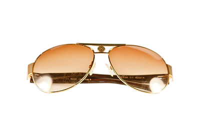
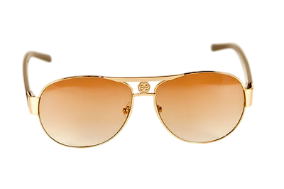
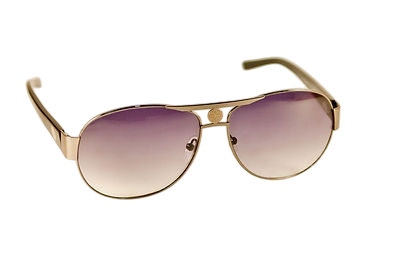
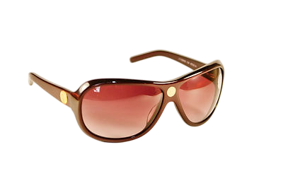
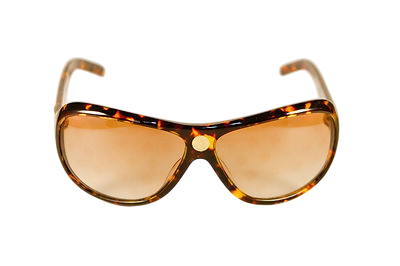
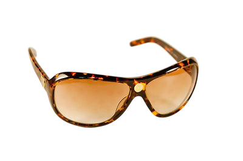

Очки «Яй-Осидо»









Институт проблем образования Республики Азербайджан ЛАБОРАТОРИЯ ПСИХОГИГИЕНЫ И МЕДИКО-ПСИХОЛОГИЧЕСКОЙ ДИАГНОСТИКИ Способ коррекции функционального состояния зрения человека ОЧКИ «ЯЙ-ОСИДО»
Способ заключается в использовании очков с нанесенным на линзы символом «Яй-Осидо». При их применении снимается усталость глаз, повышаются интеллектуальная и физическая работоспособность, свето- и цветочувствительность сетчатки, улучшаются зрительные функции, усиливается острота зрения, расширяется поле зрения, проводится коррекция психоэмоционального состояния (снижаются раздражительность, тревожность, ригидность), сокращается время восстановления организма, повышаются адаптационные возможности.
В основе разработки использован Гармонизатор «Яй-Осидо: Зеркало Жизни» Патент Украины на полезную модель № 58256 от 11.04.2011 Гармонизатор «Яй-Осидо» продолжает серию гармонизаторов «Ключ Жизни». Научная основа разработки – метод Психографии Я.С.Ибадова, рунные технологии В.П. Гоч, результаты проведенных научных исследований, полученные современными инструментальными электрофизиологическими методами (ЭКГ, ЭЭГ, ЭМГ, Фолля, ГРВ), с помощью системы «AURA-Vibraimag», диагностического комплекса «Омега-2М» и методом информа-ционного контроля (торсионный фазовый портрет). Европейское признание Изобретение было удостоено награды "Европейское качество" и лицензией Европейской Бизнес Ассамблеи из 28 стран Европы, Азии, Африки и Латинской Америки. Данный приз и лицензия соответствуют уровню брендов Европы на изобретения. № заявки на изобретение U 2013 08972